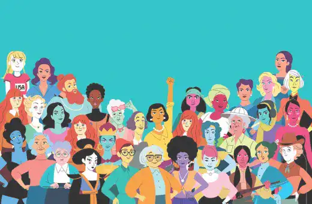

Au fil des générations, l’art a évolué tout comme le féminisme pour en arriver à ce que l’on connaît aujourd’hui. Les mœurs ont changé et les moyens de communication se sont diversifié en particulier les moyens technologiques comme les vidéos, les réseaux sociaux et les nombreux sites internet. Que ces changements soient bénéfiques ou non à notre société, ça, c’est à vous d’en décider. Dans tous les cas nous devons vivre avec ces nouveaux moyens de communications et les artistes l’ont bien compris.
L’expression artistique féministe d’aujourd’hui
Qui est cette artiste ?
Parmi les nombreux artistes actuels, une se démarque utilisant parfaitement les moyens actuels pour communiquer ses idées. Cette artiste, c’est Pénélope Bagieu, dessinatrice, scénariste et blogueuse française née en 1982. Elle a même été récompensée en 2013 par la France en tant que Chevalière de l’ordre des Arts et des Lettres ce qui est une distinction très importante. Mais aussi en 2019 lorsqu’elle a remporté un prix Eisner aux Etats-Unis pour ses bandes dessinées. Elle a commencé par un blog où elle racontait sa vie de manière humoristique puis par créer des animations, des bandes dessinées, des livres et est même passée par la case cinéma en étant actrice. Elle n’a pas fait que des travaux sur le féminisme néanmoins les œuvres qu’elle a produite dans ce thème ont fortement marqué.
Bagieu est issu d’une famille de classe moyenne. Une enfance normale qui l’a mené par la suite à faire des études d’arts. Elle raconte qu’elle n’est allée au musée pour la première fois qu’à cette époque. Elle n’y était jamais allée avant. C’est dans ces lieux et particulièrement au musée Pompidou Paris que l’artiste de 39 ans va se ressourcer. Pompidou est une sorte de «piscine» où elle s’immerge. Elle en sort apaisée et pleine de créativité. Elle a toujours eu un rapport à l’art important à cette époque encore plus aujourd’hui. Et surtout, elle s’est bien rendu compte que les femmes n’avaient pas assez leur place dans les musées. Mais aussi dans la vie de tous les jours.
But de son travail féministe
Ainsi, son travail à débuter à remettre au goût du jour des femmes, peu importe leur profession.
[…] j’ai fait une petite rétrospective personnelle des artistes dont le travail m’a inspirée, de la Renaissance à nos jours, afin de revaloriser la place de ces femmes dans l’histoire de l’art
Les femmes restent très peu présentes dans les musées, hormis comme sujets.
dans un article du centre Pompidou.
Engagée donc ? Et utilisant les moyens de communication modernes
En effet, Pénélope Bagieu s’est fait connaître grâce à son blog de bande dessinée où elle racontait sa vie de manière ludique et décontractée. Aujourd’hui, elle débat d’autres sujets, beaucoup en rapport avec la société. En particulier les filles, femmes. Depuis, certaines de ces œuvres ont été réadaptées sous forme de mini-série. Quand on pense Pénélope Bagieu et féminisme, on voit tout de suite son œuvre Culottées qui est un livre divisé en plusieurs toms puis en intégral réadaptés sous forme de mini-série depuis. Ainsi, dans ce livre, elle raconte de manière ludique et dessinée l’histoire de plusieurs femmes qui ont marqué le monde mais qui l’ont avant tout marqué. Elle voulait montrer ces femmes, des femmes dont on n’entend pas parler. Des femmes laisser dans l’ombre à profit de modèle de société. Elle effectue donc un travail de mémoire et de préservation de ces femmes, des valeurs présentées par celles-ci.
L’art et le féminisme au plus proche des jeunes
La jeune génération est un espoir pour changer les choses. Nous l'avons vu avec le réchauffement climatique. Qu'en est-il du féminisme ?

Vidéo
Découvrez une mise en situation du féminisme au court de cette vidéo
Une histoire de l'art féministe
Une histoire riche en valeurs et en visuels artistiques, découvrez une artiste féministe du passé.